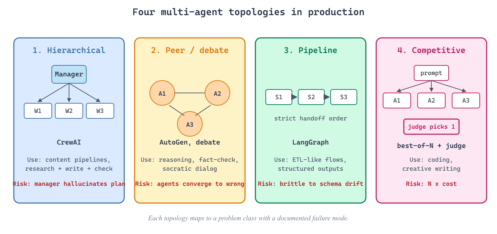

This continuation of Section 30.2 picks up after the single-agent libraries and moves to the topologies that combine multiple agents into one system. It catalogues the four multi-agent topologies in production (hierarchical, peer / debate, pipeline, competitive), names the canonical frameworks for each, and tabulates the failure modes you should expect.
Multi-Agent Patterns and Topologies
One agent is rarely enough. As soon as a task spans multiple skills (research plus writing, code plus review, planning plus execution), a single LLM context starts to fail: prompts get long, role confusion creeps in, the model loses track of which sub-goal it is pursuing. The standard response is to decompose into multiple agents with focused roles, smaller contexts, and a handoff protocol. The remaining question: which topology?
This section catalogs the four multi-agent topologies in production through 2024-2026 with the named cases that made each famous. The conceptual taxonomy is in Chapter 28; this is the practitioner's reference for which pattern to pick and which failure modes to expect. Chapter 27 (Tool Use) covers the MCP and function-calling primitives the agents use.

Four topologies cover 90% of production multi-agent systems: hierarchical (manager dispatches to workers), peer / debate (agents argue toward consensus), pipeline (sequential handoff), competitive (best-of-N wins). Each maps to a problem class with documented failure modes. The framework choice (LangGraph, CrewAI, AutoGen, MetaGPT) is mostly a question of which topology each makes ergonomic.
1. Hierarchical: Manager Plus Workers
The hierarchical topology has a manager agent that decomposes the request and dispatches sub-tasks to specialist workers. The manager plans, sequences, and aggregates; workers execute one well-defined skill. CrewAI popularized this through role-based abstractions and it dominates production content-generation systems.
CrewAI defines each worker as a Role with description, goal, and backstory; the manager (Crew) sequences tasks. The 2024-2025 deployments at Mintlify and HubSpot use a researcher, writer, editor, and fact-checker chained for blog production. The pattern works because each role's prompt stays under 2k tokens, and the manager only tracks current step, not full history.
from crewai import Agent, Task, Crew, Process
researcher = Agent(role="Researcher", goal="Find authoritative sources",
backstory="A meticulous research librarian.", tools=[web_search, arxiv])
writer = Agent(role="Writer", goal="Draft engaging prose",
backstory="A former magazine staff writer.", tools=[])
editor = Agent(role="Editor", goal="Polish for clarity and voice",
backstory="A senior copy editor.", tools=[])
crew = Crew(
agents=[researcher, writer, editor],
tasks=[Task(description="Research X", agent=researcher),
Task(description="Draft post about X using the research", agent=writer),
Task(description="Edit the draft", agent=editor)],
process=Process.hierarchical, # manager dispatches; alt: Process.sequential
)
result = crew.kickoff()The manager prompt is the highest-leverage piece of the system. A loose manager ("delegate as you see fit") drifts into infinite re-dispatch; a tight manager ("call each worker exactly once, in order") loses most of the value. The 2025 sweet spot: a small set of allowed actions (dispatch, aggregate, terminate) plus a max-iteration cap. CrewAI's max_iter and LangGraph's recursion limit both enforce this.
2. Peer / Debate: Consensus Through Disagreement
The peer topology has agents at the same level with deliberately opposing roles (proposer / critic, optimist / pessimist, two experts) exchanging arguments to converge on an answer. Du et al. (2023) "Improving Factuality and Reasoning in Language Models through Multiagent Debate" showed measurable factuality gains on benchmarks where a single agent confabulates. The 2024-2025 follow-ups extended this to code review (proposer suggests fix, second agent searches for bugs).
AutoGen (Microsoft Research, now v0.4 / Agent-Stack as of 2025) is the framework most explicitly designed around peer conversation. Its GroupChat wires N agents into a shared transcript with a speaker-selection policy (round-robin, LLM-routed, rule-based). Microsoft's 2024 GitHub Copilot Workspace case study used AutoGen for code review: proposer suggests refactor, tester writes tests, reviewer looks for regressions, loop terminates on no further critiques.
The textbook peer-debate failure: the first agent says something false with confidence; the second, finding it plausible, builds on it instead of challenging it. Park et al. 2023 "Generative Agents" documented this in social simulations; 2024 Anthropic work extended the analysis. Production mitigation: bind at least one agent to external ground-truth (search, code execution, database). Pure LLM-on-LLM debate amplifies confident wrongness.
3. Pipeline: Sequential Specialization
The pipeline topology is simplest: A's output is B's input, no branching, no loops. MetaGPT (Hong et al., ICLR 2024) made this famous by modeling a software org as a sequence (PM, architect, project manager, engineer, QA) where each produces a structured artifact (PRD, design doc, task breakdown, code, test report) as input for the next. Artifacts coordinate: B reads what A wrote, not A's reasoning history.
Pipeline fits genuinely linear workflows with clear skill boundaries. MetaGPT v0.8 (2024) generated small open-source projects (Snake game, calculator, blog scaffold) from one-line specs; the 2025 successor OpenHands (formerly OpenDevin) applies the pattern to autonomous software engineering with tighter shell-and-Git integration. Pipelines also dominate doc-processing: ingest extracts entities, normalization canonicalizes, summarization writes briefs, classification routes to reviewers.
4. Competitive: Race to the Best Answer
The competitive topology runs N agents on the same task in parallel and picks the best by learned judge, deterministic test, or majority vote. It is the agent equivalent of ML ensembles. Public 2024-2025 examples come from coding: self-consistency decoding (Wang et al., extended to agent loops in 2024) generates N candidates and votes; AlphaCode 2 (DeepMind 2024) sample-and-filtered thousands of code candidates by passing tests.
Competitive fits verifiable tasks (run the code, check JSON schema, validate math) where N x cost is justified by quality gain. The 2025 best-of-N inference work at Anthropic and OpenAI, with reasoning models drawing from a budget of intermediate thoughts and a learned verifier, internalizes this pattern into a single model.
5. Comparison and Selection
| Topology | Best For | Failure Mode | Canonical Framework | Cost Profile |
|---|---|---|---|---|
| Hierarchical | Multi-skill tasks with clear roles | Manager runaway loops | CrewAI, LangGraph | 1 LLM call per worker step + 1 per manager decision |
| Peer / Debate | Factuality, reasoning, code review | Cascading hallucinations | AutoGen | 2N+ calls per turn (every agent speaks) |
| Pipeline | Linear workflows, structured artifacts | Early-stage errors propagate | MetaGPT, OpenHands | 1 call per stage; deterministic |
| Competitive | Verifiable tasks with high cost of failure | N x the budget for marginal gain | AlphaCode-style sample-and-rank | N parallel runs + verifier |
6. Coordination Overhead: The Hidden Tax
Every additional agent adds coordination overhead: tokens on role descriptions, on context-carrying transcripts, on planning a human would have done in their head. Chen et al. (NeurIPS 2024) "Are More LLM Calls All You Need?" showed empirically that on simple tasks (single-step Q&A, basic summarization), multi-agent systems are worse than a well-prompted single agent because coordination overhead exceeds specialization benefit.
Heuristic: do not reach for multi-agent until a single-agent baseline fails for an identifiable reason (context overflow, role confusion, repeated tool errors). If the single-agent baseline works, multi-agent is gold-plating.
A pattern repeatedly seen in 2024-2025 CrewAI deployments: a hierarchical crew where the manager keeps re-dispatching because the worker's output is "almost right but not quite." Without explicit termination, the loop runs until token budget exhaustion. Fix: every Task gets a max_iter and every worker returns a structured artifact whose acceptance is judged by a deterministic check (schema, regex, hash), not another LLM call. The framework will not save you; you bound loops yourself.
7. Framework Mapping
Most frameworks support multiple topologies but each has a sweet spot. LangGraph is most general (graph engine; any topology) but code-heavy. CrewAI is most ergonomic for hierarchical and pipeline patterns. AutoGen is most natural for peer debate via GroupChat. MetaGPT is purpose-built for the software-engineering pipeline. For competitive / best-of-N no framework dominates; teams wire it themselves around any of the above. See Section 30.2 (Libraries & Frameworks) for the framework-level comparison.
- Section 30.2 (Libraries & Frameworks) for the framework-by-framework feature comparison (LangGraph, CrewAI, AutoGen, OpenAI Agents SDK, Semantic Kernel, smolagents, PydanticAI).
- Section 45.2 (Libraries & Frameworks) for the production observability and guardrail patterns that bound multi-agent systems.
- Chapter 26 (AI Agents) for the conceptual treatment of agent architectures.
- Chapter 27 (Tool Use Protocols) for the MCP and function-calling primitives multi-agent systems use.
- Chapter 28 (Multi-Agent Systems) for the full conceptual taxonomy.
- Four topologies dominate production multi-agent systems: hierarchical (manager + workers), peer / debate, pipeline, competitive (best-of-N). Pick by task shape, not framework preference.
- CrewAI for content production, AutoGen for code review and debate, MetaGPT / OpenHands for software-engineering pipelines, sample-and-rank for verifiable competitive tasks.
- Coordination overhead is real. Chen et al. (2024) showed multi-agent loses to single-agent on simple tasks; reach for multi-agent only when a single-agent baseline fails.
- Cascading hallucinations are the peer-debate failure mode; runaway loops are the hierarchical failure mode. Bind at least one agent to external ground truth; bound every loop with max_iter and structured-artifact termination checks.
- The manager prompt is the highest-leverage piece of any hierarchical system. Tight, action-bounded managers beat loose "delegate as you see fit" managers in every documented 2024-2025 case.
What's Next?
In the next section, Section 30.4: Datasets & Benchmarks, we build on the material covered here.